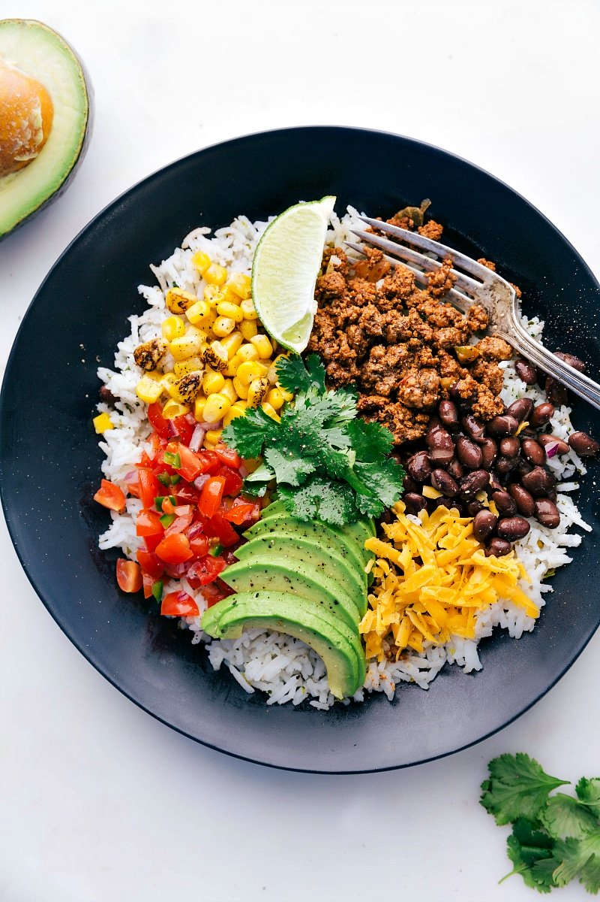

Taco Bowl

Description
This taco bowl can satiate your post-workout munchies! You will need:
- Tomatoes
- Red Onions
- Cilantro
- Lime
- White Rice
- Ground Beef
- Taco Sauce
The steps to create this delicious masterpiece are as follows:
- Create the pico de gallo
- Cut the tomatoes into small pieces
- Cut the red onions in even smaller pieces
- Combine them in a bowl and add some cilantro
- Squeeze some of that good ole lime juice in there
- Cook the white rice and combine it with the pico de gallo
- Cook the ground beef
- You should know how to cook meat lol but make sure to...
- Crush the meat as its cooking into small pieces
- Make sure to choke that jawn with an absurd amount of
seasoning!!!
- Add it in with the white rice and pico de gallo
- Squirt some nice taco sauce on it
This dish is also known as the golden nectar
at the end of Leg Day.